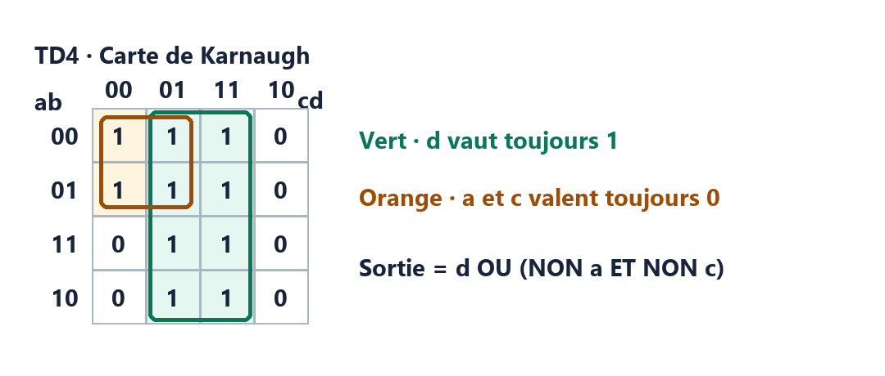

Comprendre le cours
1. Lire un entier et changer de base
Un bit est un chiffre qui vaut 0 ou 1. Huit bits forment un octet. Le poids d’une case indique combien on ajoute quand elle vaut 1. On commence à droite avec le poids 1, puis on double en remontant vers la gauche.
| Poids | 128 | 64 | 32 | 16 | 8 | 4 | 2 | 1 |
|---|---|---|---|---|---|---|---|---|
| Bits de 151 | 1 | 0 | 0 | 1 | 0 | 1 | 1 | 1 |
Lis 10010111 en additionnant 128 + 16 + 4 + 2 + 1 = 151. Pour aller du décimal au binaire, les divisions par 2 donnent les bits dans l’ordre inverse. Le premier reste vaut 0 ou 1 selon que le nombre de départ est pair ou impair. Pour l’octal, groupe les bits par 3 depuis la droite. Pour l’hexadécimal, groupe-les par 4. Le chiffre A vaut 10 et F vaut 15.
À gauche, les zéros ajoutés changent la taille du mot sans changer sa valeur non signée. Avec n bits, on a 2n mots distincts. Comme on représente aussi 0, le dernier entier est 2n−1. Pour les capacités, 1 Kio = 1024 octets. En revanche, 1 ko = 1000 octets.
2. Choisir une convention pour les entiers négatifs
La même suite de bits peut désigner plusieurs valeurs. Pour lire un entier, demande d’abord combien de bits sont utilisés et quelle convention s’applique.
| Convention sur 8 bits | Comment coder −5 | Plage |
|---|---|---|
| Valeur absolue signée | 1|0000101. Le 1 indique le signe, les 7 autres bits donnent 5. | −127 à 127 |
| Complément à 1 | 11111010. Inverse tous les bits de 00000101. | −127 à 127 |
| Complément à 2 | 11111011. Ajoute 1 au complément à 1 et garde les 8 bits. | −128 à 127 |
| Excédent 128 | 01111011. Écris −5 + 128 = 123 comme un entier non signé. | −128 à 127 |
En complément à 2, le premier bit pèse −128 au lieu de +128. Par exemple 10011011 donne −128 + 16 + 8 + 2 + 1 = −101. Pour passer à davantage de bits, recopie le bit de signe à gauche. La valeur absolue signée et le complément à 1 possèdent chacun deux mots pour zéro.
Une retenue est le report vers le bit suivant. Un débordement signé signifie que le vrai résultat sort de la plage. Sur 8 bits en complément à 2, 01111111 + 00000001 → 10000000 est un débordement, car 127 + 1 vaut 128 et le mot obtenu sera lu −128.
Pour soustraire, additionne l’opposé en complément à 2. Décaler d’une case vers la gauche multiplie la valeur par 2 tant que le résultat tient dans le format. Pour diviser un entier négatif pair par 2 en complément à 2, décale vers la droite en propageant le bit de signe. Pour les négatifs impairs, vérifie le sens de l’arrondi de l’opération utilisée.
3. Écrire une fraction et lire un flottant IEEE 754
À droite de la virgule, les poids valent 1/2, 1/4, 1/8, etc. Pour convertir une fraction, multiplie-la par 2, écris la partie entière et recommence avec ce qui reste. Une fraction réduite termine en binaire si son dénominateur est une puissance de 2. Ainsi 0,125 = 0,001₂, alors que 0,1 a un développement périodique.
En simple précision, IEEE 754 range 1 bit de signe, 8 bits d’exposant et 23 bits de fraction. Pour un nombre normal, écris la grandeur sous la forme 1,f × 2^e. On stocke E=e+127, puis seulement les bits f après la virgule. En double précision, les tailles sont 1, 11 et 52 bits, avec un biais de 1023.
Quand E=0, une fraction nulle donne zéro et les autres valeurs sont sous-normales avec un 0 avant la virgule. Quand les bits de l’exposant valent tous 1, une fraction nulle représente un infini et une fraction non nulle un NaN. Une valeur trop fine pour le format doit être arrondie. Pour additionner deux flottants à la main, aligne les exposants, additionne les significandes signées, puis normalise et arrondis le résultat.
Pour multiplier, multiplie les significandes, additionne les exposants réels et prends un signe négatif si un seul facteur est négatif. Renormalise avant de remettre le biais. Additionner les exposants stockés ferait compter le biais deux fois.
4. Caractères, parité et code de Hamming
Une table de caractères attribue des numéros aux signes. ASCII attribue 98 à b sur 7 bits. Unicode attribue un point de code aux caractères et UTF-8 décrit la manière de l’écrire en octets. Par exemple, é vaut U+00E9 et s’écrit C3 A9 en UTF-8.
Un contrôle de parité paire exige un nombre pair de 1 sur le mot entier. Il détecte un nombre impair d’inversions et laisse passer un nombre pair d’inversions. Hamming répartit plusieurs contrôles sur des groupes différents. Les places 1, 2, 4, 8… portent les bits de contrôle. Le contrôle 4 surveille les positions dont le bit de poids 4 vaut 1, telles que 4, 5, 6 et 7. Avec m bits de données, choisis le plus petit r tel que 2r ≥ m+r+1. Il faut un résultat pour chaque position et un résultat pour l’absence d’erreur.
À la réception, additionne les indices des contrôles qui échouent. Cette somme forme le syndrome. Quand on suppose une seule erreur, le syndrome indique la case à inverser. Avec deux erreurs, le syndrome peut pointer une autre case. Il faut donc annoncer l’hypothèse d’erreur simple avant de corriger.
5. De la table de vérité au circuit
Une variable booléenne vaut 0 ou 1. Le ET vaut 1 quand les deux entrées valent 1. Le OU vaut 1 quand au moins une entrée vaut 1. Le OU exclusif, ou XOR, vaut 1 pour deux entrées différentes. Le NON inverse une entrée. Lis un schéma de gauche à droite et donne un nom au résultat de chaque porte.
Pour écrire une formule à partir d’une table de vérité, prends chaque ligne de sortie 1. Écris un terme ET où les entrées à 0 sont niées, puis réunis les termes par OU. Par exemple f(a,b)=1 aux lignes 01 et 11 donne (¬a∧b)∨(a∧b)=b. Dans une carte de Karnaugh, l’ordre 00 01 11 10 rapproche justement les cases qui ne diffèrent que d’un bit. Les bords opposés se rejoignent.
Groupe les 1 en rectangles de taille 1, 2, 4, 8… et garde les variables constantes dans chaque groupe. Un chevauchement est permis. Grouper les 0 donne la formule de la fonction complémentaire, puis les lois de De Morgan permettent de retrouver la fonction. Pour économiser des portes, factorise les termes communs et compare les expressions sur la table de vérité.
Un multiplexeur 4 vers 1 choisit l’une de quatre entrées grâce à deux bits de commande. Pour réaliser une fonction de trois variables, utilise deux variables comme sélection, puis observe ce que devient la sortie pour la troisième variable. Sur chaque entrée du multiplexeur, câble une constante, la troisième variable ou sa négation.
Du cours aux TD et TP
Les quatre TD vont de la lecture des bits jusqu’à la réalisation d’un circuit. Chaque lien ouvre le groupe de questions qui fait travailler la notion.
Questions TD & TP
TD1 · Entiers, tailles et bases
Exercices 1 à 6 · Convertir et choisir le nombre de chiffres
Énoncé. Convertir 5 Kio en octets puis en bits, lire les quatre mots non signés de l’exercice 2 et déterminer le nombre minimal de bits pour écrire les entiers de 0 à 999.
- Calcule 5 × 1024 = 5120 octets, puis 5120 × 8 = 40 960 bits. Vérifie les unités après chacune des multiplications.
- Avec les poids de droite à gauche, lis
1100=12,001011=11,10010111=151et11111111=255. Pour 202, sur huit bits,1100 1010devientCAen hexadécimal. En octal, le même mot se regroupe en011 001 010et donne312. - Il faut 1000 valeurs distinctes. 29=512 est insuffisant et 210=1024 suffit. En base 3, 36=729 et 37=2187 donnent 7 chiffres. En décimal, 3 chiffres suffisent.
Exercices 7 à 9 · Interpréter les conventions signées
Énoncé. Coder 18, −5, −35, −127 et −128 en valeur absolue signée, complément à 1, complément à 2 et excédent 128, sur un octet.
| Valeur | VAS | C1 | C2 | Excédent 128 |
|---|---|---|---|---|
| 18 | 00010010 | 00010010 | 00010010 | 10010010 |
| −5 | 10000101 | 11111010 | 11111011 | 01111011 |
| −35 | 10100011 | 11011100 | 11011101 | 01011101 |
| −127 | 11111111 | 10000000 | 10000001 | 00000001 |
| −128 | Hors plage | Hors plage | 10000000 | 00000000 |
Pour −35, pars de 00100011. En VAS, positionne le signe. En C1, inverse l’octet entier. En C2, ajoute 1 après inversion. En excédent, code 93, le résultat de 128−35. Pour vérifier le codage C2, additionne les poids du mot avec un poids négatif à gauche.
Exercices 10 à 13 · Distinguer Carry et Overflow
Énoncé. Sur un octet en complément à 2, effectuer −1 + 1 et 127 + 127 en précisant Carry et Overflow. Effectuer ensuite 9−15 et −24/4.
11111111 + 00000001 = 1 00000000. Carry vaut 1 puisque la retenue franchit l’octet. Le résultat signé vaut 0, donc Overflow vaut 0.01111111 + 01111111 = 11111110. Carry vaut 0. Le résultat se lit −2 en C2 alors que l’addition vaut 254. Overflow vaut donc 1. Un positif et un négatif donnent toujours un résultat compris entre les deux opérandes, donc dans la plage autorisée.00001001 + 11110001 = 11111010, soit −6. Pour −24/4, décale deux fois le mot11101000vers la droite avec extension du signe. Tu obtiens11111010, encore −6.
TD2 · Flottants
Exercices 1 et 2 · Coder −6,125 puis décoder un mot
Énoncé. Donner le mot simple précision de −6,125 en indiquant sa forme normalisée. Décoder ensuite 1 | 10000001 | 01000000000000000000000.
- Pour 6,125, réunis 6 =
110₂et 1/8 =0,001₂. Le résultat normalisé vaut1,10001₂ × 2². - Le signe vaut 1 et l’exposant stocké représente 129. Écris
1 | 10000001 | 10001000000000000000000. Vérifie que la fraction contient 23 bits. - Dans le second mot, 129−127 donne encore 2. La significande
1,01₂vaut 1,25. On obtient−1,25 × 4 = −5.
Exercices 3 à 5 · Limites et calcul avec des flottants
Énoncé. Donner les deux valeurs absolues extrêmes des nombres normaux en simple précision, puis expliquer comment effectuer une addition sur deux mots.
- Le minimum normal a
E=1et une fraction nulle. C’est 2−126. Le maximum aE=254et les 23 bits de fraction à 1. C’est (2−2−23) × 2127. - Pour la question sur l’ordre, compare d’abord les signes. Parmi les positifs normaux, l’exposant biaisé est croissant avec l’exposant réel, puis la fraction départage deux exposants égaux. Parmi les négatifs, l’ordre des valeurs numériques s’inverse par rapport à celui de leurs grandeurs.
- Au 5(c), décode les deux mots en
1,1₂ × 2⁻²et1,0₂ × 2⁻³. Réécris le second0,1₂ × 2⁻². Leur somme vaut10,0₂ × 2⁻² = 1,0₂ × 2⁻¹, soit0 | 01111110 | 00000000000000000000000et une valeur de 0,5.
TD3 · ASCII et Hamming
Exercices 1 et 2 · Ajouter et vérifier un bit de parité
Énoncé. Écrire b, 5, P et # en ASCII avec un bit de parité paire à gauche. Tester ensuite le mot reçu 0100 0100.
- Lis les codes ASCII non signés 98, 53, 80 et 35. Les représentations sur 7 bits ont respectivement 3, 4, 2 et 3 bits à 1.
- Ajoute donc à gauche 1, 0, 0 et 1. Les octets obtenus valent
E2,35,50etA3en hexadécimal. - Le mot reçu contient deux 1. La parité est valide. Enlève le bit à gauche pour lire
1000100, soit 68, le caractèreD. La parité valide laisse ouvertes les erreurs portant sur un nombre pair de bits.
Exercices 3 à 6 · Placer les bits de contrôle et lire le syndrome
Énoncé. Trouver combien de contrôles sont nécessaires pour 1, 4, 8 et 21 bits de données, puis coder 0110 avec parité paire.
- Teste 2r ≥ m+r+1 pour chaque longueur. Il faut respectivement 2, 3, 4 et 5 contrôles, soit des mots transmis de 3, 7, 12 et 26 positions.
- Numérote les cases de droite à gauche comme dans le poly. Les bits de
0110occupent de gauche à droite les positions 7, 6, 5 et 3. Le contrôle 1 voit un seul 1 parmi 3, 5 et 7. Le contrôle 2 voit un seul 1 parmi 3, 6 et 7. Le contrôle 4 en voit deux parmi 5, 6 et 7. On écrit0 1 1 0 0 1 1. - Pour décoder les chaînes de l’exercice 6, passe en parité impaire. Note les groupes qui contiennent à tort un nombre pair de 1 et additionne leurs indices. Corrige la case indiquée, retire les contrôles, puis sépare les données en blocs de 7 bits avant de chercher les lettres ASCII.
TD4 · Logique et circuits
Exercices 1 à 3 · Évaluer une fonction et utiliser Karnaugh
Énoncé. Évaluer f₁=(a∨b)∧(c∨d) quand a=c=1, b=d=0, puis lorsque a=d=1 et que b et c sont inconnus. Simplifier ensuite la première carte de l’exercice 2.
- Dans les deux cas, chaque parenthèse contient au moins un 1. Les deux parenthèses valent donc 1 et la sortie aussi.
- Dans la carte, l’ordre des colonnes est
00, 01, 11, 10. Les colonnes01et11sont pleines de 1. Leur seul bit constant estd=1, ce qui donne le termed. - Les deux 1 restants en colonne
00peuvent être groupés avec ceux de la colonne01sur les deux premières lignes. Dans ce rectangle,a=0etc=0. Résultatd ∨ (¬a ∧ ¬c). Vérifie par exemple que la ligneab=11, colonnecd=00donne bien 0.

Exercices 4 à 6 · Passer d’une expression aux portes
Énoncé. Tracer le circuit de E₁=A¬B+AB¬C et reconnaître les portions réutilisables pour économiser des portes.
- Traduis les produits par des ET. Inverse B et C sur les branches qui en ont besoin. L’expression directe rassemble les deux produits dans un OU.
- Factorise A. À l’intérieur,
¬B ∨ (B∧¬C) = ¬B ∨ ¬C. En effet, si B vaut 0, la parenthèse vaut 1, et si B vaut 1 elle prend la valeur de ¬C. Le circuit simplifié forme d’abord¬(B∧C), puis le combine avec A par un ET. - Pour le dé, remplis les lignes
001à110. Fais une colonne par LED et marque les entrées inutilisées explicitement. La ligne011allume a, d et g. Simplifie chaque colonne comme une fonction indépendante et regroupe les signaux communs avant de câbler.